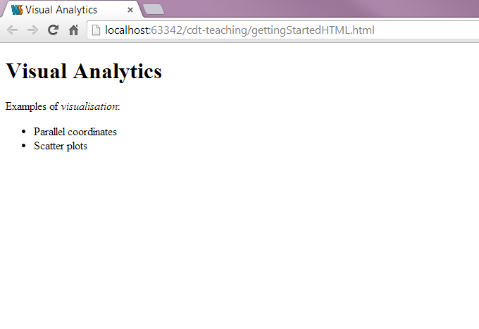
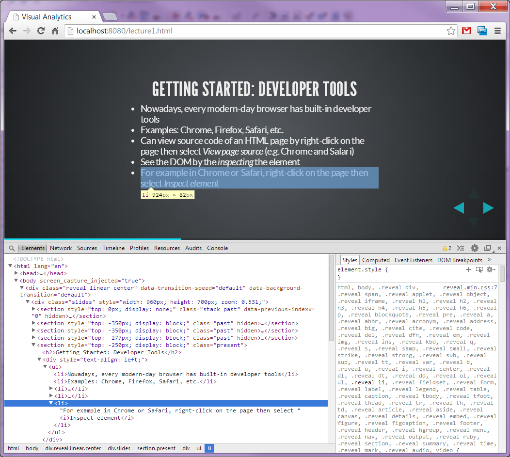
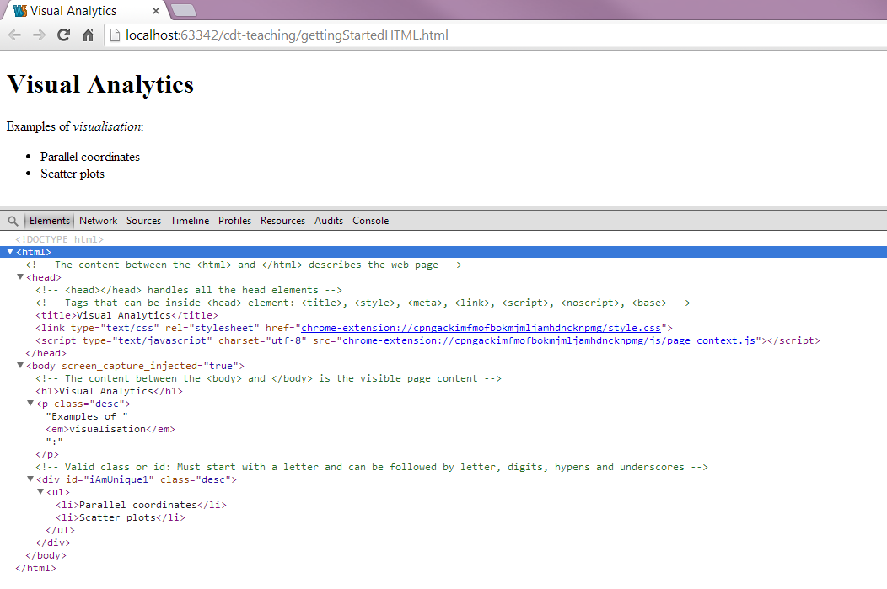
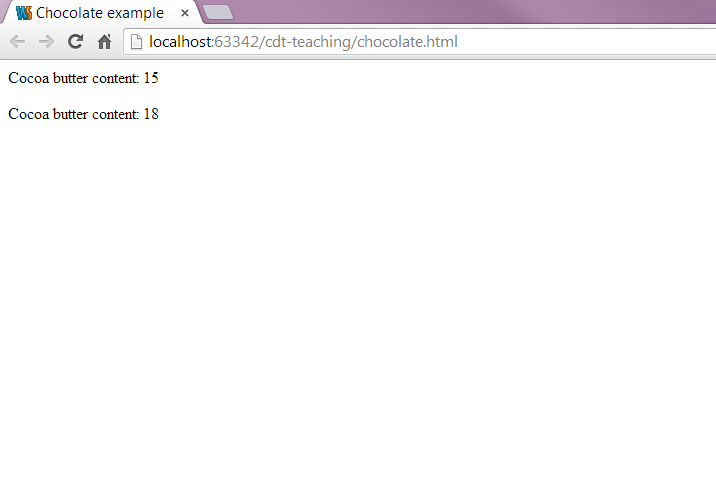
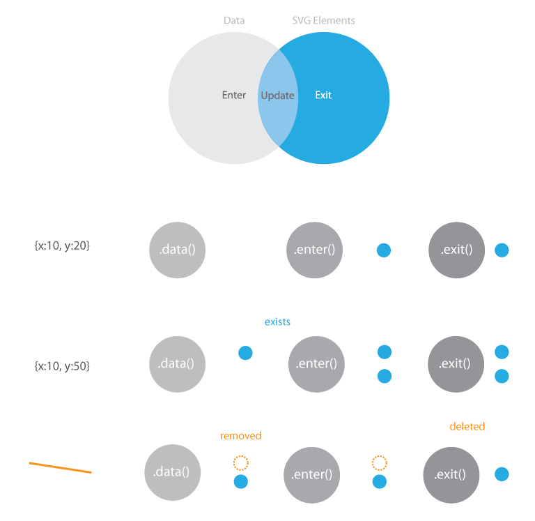

Creating Visualizations with D3
Senior Research Fellow @ CERN
Who am I?

Eamonn Maguire
BSc Computer Science, MRes Bioinformatics, DPhil in Computer Science
Previously at EMBL-EBI and Oxford University
Have a design consultancy company called Antarctic Design
Outline
Some basics
- What is D3?
- Getting started with HTML, CSS, JS, and SVG
- Debugging
More Advanced
- D3.js - Fundamentals
- Loading Data
- Processing Data
- Zooming, Brushing, Linking
- Multidimensional Data Vis
- Network Vis
- Geo Vis
Introducing D3
D3 (Data-Driven Documents):
- A JavaScript library that utilizes SVG, HTML, and CSS for creating data visualization on the web
- Created by Mike Bostock, Vadim Ogievetsky, and Jeff Heer
- With D3, you can:
- Easily load your data into the browser
- Inspect and manipulate your data through the Document Object Model (DOM)
- Include interaction and animation in your visualization easily
- Download the latest version of D3 (http://d3js.org/)
Getting Started: HTML
HTML (Hypertext Markup Language):
- Is used to structure content for web browsers
- Saved as plain text file with .html extension
- Many different revisions of the HTML standard
- HTML5 is the current revision
- The DOCTYPE declaration defines the document type:
<!DOCTYPE html>is the doctype for HTML5
- "Mark up" content to specify semantic structure by adding tags to create elements
HTML Elements and Attributes
- Elements are entities for structuring the HTML documents
- Most of the elements are defined with a start tag, an end tag, and the content in between
<element>Content in between</element> <!-- Element with closing
tag -->- For example:
<h1>Hello World!</h1>- Elements can have attributes to provide extra information about them
- The attributes are defined in the start tag and are in name/value pairs: name = "value"
- For example:
<h1 class="myStyle">Hello World!</h1>Example: HTML
<!DOCTYPE html>
<html>
<!-- The content between the <html> and </html> describes the web page -->
<head>
<!-- <head></head> handles all the head elements -->
<!-- <head></head> also provides the information about the page -->
<!-- Tags that can be inside <head> element: <title>, <style>, <meta>, <link>,
<script>, <noscript>, <base> -->
<!-- <title></title> gives the title of the page -->
<title>Visual Analytics</title>
</head>
<body>
<!-- The content between the <body> and </body> is the visible page content -->
<h1>Visual Analytics</h1>
<p class="desc">Examples of <em>visualisation</em>:</p>
<!-- Valid class or id: Must start with a letter and can be followed by letter, digits, hypens, and
underscores -->
<div id="iAmUnique1" class="desc">
<ul>
<li>Parallel coordinates</li>
<li>Scatter plots</li>
</ul>
</div>
</body>
</html>Example: HTML
Getting Started: Developer Tools
- Nowadays, every modern-day browser has built-in developer tools
- Examples: Chrome, Firefox, Safari, etc.
- Can view source code of an HTML page by right-click on the page then select View page source (e.g. Chrome and Safari)
- See the DOM by the inspecting the element
- For example in Chrome or Safari, right-click on the page then select Inspect element
Example: Developer Tools
Getting Started: DOM
DOM (Document Object Model):
- Hierarchical structure of HTML
- Each pair of bracketed tags is an element
- Refer to elements' relative relationships to each other in terms of: parent, child, sibling, ancestor and descendant
- In the previous example:
bodyis the parent element to its children -h1,panddiv(which are siblings to each other)- And all elements are descendants of
html
Example: DOM
Getting Started: CSS
CSS (Cascading Style Sheets):
- The visual representation of the document structure
- Consists of selectors and properties
selector {
property: value;
}
selectorA, selectorB {
property: value;
}- For example:
p {
font-size: 24px;
}
h1, .desc {
color: #F179D1;
font-weight: bold;
}CSS-Style Selectors
Type selectors: match DOM elements with the same name
p /* Selects all paragraphs */Descendant selectors: match elements contained by another elements
div p /* Selects p elements contained in a div */Class selectors: match elements of any type assigned to a specific class
.desc /* Selects elements with class "desc" */
.desc.highlight /* Selects hightlighted desc */ID selectors: match the element with the specific ID
#iAmUnique1 /* Selects element with ID "iAmUnique1" */Combination: combined to target specific elements
div.desc /* Selects divs with class "desc" only */Referencing Styles
Three ways to apply CSS styles rules to HTML document:
- Embed the CSS in the HTML
<head>
<style type="text/css">
h1 { font-size: 16px; }
</style>
</head>- For example:
<!DOCTYPE html>
<html>
<head>
<title>Visual Analytics</title>
<!-- Embedding the CSS in the HTML -->
<style type="text/css">
h1 { font-size: 16px; }
</style>
</head>
<body>
<h1>Visual Analytics</h1>
</body>
</html>Referencing Styles
Three ways to apply CSS styles rules to HTML document:
- Reference an external stylesheet from the HTML
<head>
<link rel="stylesheet" href="style.css">
</head>- For example:
<!DOCTYPE html>
<html>
<head>
<title>Visual Analytics</title>
<!-- Reference an external stylesheet from the HTML -->
<link rel="stylesheet" href="style.css">
</head>
<body>
<h1>Visual Analytics</h1>
</body>
</html>Referencing Styles
Three ways to apply CSS styles rules to HTML document:
- Attach inline styles
<h1 style="color: red; font-size: 24px;">An example of inline style</h1>- For example:
<!DOCTYPE html>
<html>
<head>
<title>Visual Analytics</title>
</head>
<body>
<!-- Attach inline styles -->
<h1 style="color: red; font-size: 24px;">Visual Analytics</h1>
</body>
</html>Getting Started: SVG
SVG (Scalable Vector Graphics):
- A text-based image format that is defined using markup code same as HTML
- You can include SVG code directly inside any HTML document or
- Insert it dynamically into the DOM using JavaScript
- SVG is XML-based therefore all elements must have a closing tag:
<element></element> <!-- Element with closing tag -->
<element/> <!-- Element with self-closing tag -->
- Coordinate system starts at the top-left corner
SVG Elements and Shapes
- An SVG image begins with
<svg>element - The width and height of the SVG image can be defined by the width and height attributes
- A simple SVG example:
<svg width="100%" height="100%">
<rect x="85" y="5" width="40" height="40" fill="rgba(255, 0, 0, 1.0)"></rect>
</svg>SVG Elements and Shapes
- Some of the pre-defined shapes in SVG:
- Rectangle
<rect> - Circle
<circle> - Ellipse
<ellipse> - Line
<line> - Polyline
<polyline> - Polygon
<polygon> - Path
<path>
- Rectangle
- SVG also renders text using
<text>element - You can group together your SVG shapes using
<g>element
Styling SVG Elements and Shapes
- Default style is black fill with no stroke
- You can use SVG properties such as
fill,strokeandopacityto style your SVG elements and shapes - For example using inline styles:
<rect x="85" y="5" width="40" height="40" fill="red" stroke="blue" stroke-width="5" />- Or through the CSS approach:
<rect x="85" y="5" width="40" height="40" class="mySvgStyle" />.mySvgStyle {
fill: red;
stroke: blue;
stroke-width: 5;
}Example: SVG
<svg width="800" height="220">
<!-- The order when the elements are called determines the ordering of the objects -->
<rect x="250" y="10" width="500" height="200" stroke-width="1" stroke="black" fill="white"></rect>
<!-- <g> groups the shapes together allowing you to transform and style the whole group as
a single shape -->
<g transform="scale(3) translate(100, 10)">
<circle cx="25" cy="25" r="20" fill="rgba(127, 201, 127, 0.7)" stroke="rgba(127, 201, 127, 0.5)"
stroke-width="5"></circle>
<ellipse cx="65" cy="25" rx="35" ry="15" fill="rgba(190, 174, 212, 0.7)" stroke="rgba(190, 174,
212, 0.5)"
stroke-width="5"></ellipse>
<rect x="85" y="5" width="40" height="40" fill="rgba(253, 192, 134, 0.7)" stroke="rgba(253, 192,
134, 0.5)"
stroke-width="5"></rect>
</g>
</svg>Getting Started: JavaScript
- Scripting language for manipulating the DOM after a page has been loaded in the browser
- Type the code directly in the JavaScript console or
- Load the script to the browser using a web page
- Two ways to reference the scripts:
- Directly in the HTML, between two
scripttags
<body>
<script type="text/javascript">
alert("Hello, world!");
</script>
</body>- Stored in a separate file with a .js suffix, and then referenced in the HTML
<head>
<title>Page Title</title>
<script type="text/javascript" src="script.js"></script>
</head>Example: JavaScript
/* Declaring a variable of an array of objects */
var myChocolate = [
{"type": "milk", "cocoa_butter": 15, "quantity": 13 },
{"type": "sweet", "cocoa_butter": 18, "quantity": 8 }];
/* A function to loop through the array and display the cocoa butter content */
function displayCocoaButter() {
var index;
// Loop through the array of objects
for (index = 0; index < myChocolate.length; index++) {
/* Create a <p> element */
var _p = document.createElement("p");
/* Get the cocoa butter content and add it to the <text> node */
var _text = document.createTextNode("Cocoa butter content: " + myChocolate[index].cocoa_butter);
/* Add the created <text> node to the <p> element */
_p.appendChild(_text);
/* Add the created <p> element to <body> */
document.body.appendChild(_p);
}
}Example: JavaScript
D3.js Fundamentals
Drawing shapes using D3
var svg = d3.select(placement).append("svg")
.attr("width", width)
.attr("height", height)
.append("g");
svg.append("circle")
.style("fill", "#27aae1")
.attr("cx", 40)
.attr("cy", 50)
.attr("r", 15);
svg.append("path")
.attr("d", d3.svg.symbol().size(200).type("cross"))
.style("fill", "#27aae1")
.attr("transform", "translate(90,50)");
....
Rectangles
Lines
- linear
- basis
- basis-open
- basis-closed
- step-before
- step-after
- bundle
- cardinal
- cardinal-open
- cardinal-closed
var line = d3.svg.line()
.interpolate("basis") // there are many different interpolators
.x(function (d) {
return d.x;
})
.y(function (d) {
return d.y;
});
var svg = d3.select("#canvas-id").append("rect").attr({'width':200, 'height': 200'});
svg.append("path")
.attr("d", line([{x:0, y:10}, {x:20, y:10}, {x:40, y:40}, {x:60, y:60}]))
.style({'stroke': 'white', 'stroke-width': 2, 'stroke-linecap': 'round'});
Exercise 1
Your first exercise.
Draw a house, cat, dog, cell, whatever you want with d3 using rect, circle, path, lines.
Prize for the most original :)
D3: Data Joins
Through this piece of code, we can draw a circle. But just one.
var svg = d3.select("body").append("svg")
.attr("width", 400)
.attr("height", 400)
.append("g");
svg.append("circle")
.attr("r", 20)
.attr("cx", 30)
.attr("cy", 40)
.style("fill", "#27aae1");But what if we want to draw a circle for every data point?
var svg = d3.select("body").append("svg")
.attr("width", 400)
.attr("height", 400)
.append("g");
var data = [{x:160, y:190}, {x:30, y:200}, {x:300, y:100}];
svg.selectAll("data-circle").data(data)
.enter().append("circle")
.attr("r", 10)
.attr("cx", function(d) {
return d.x;
}).attr("cy", function(d) {
return d.y;
}).style("fill", "#F179D1");
svg.selectAll("data-circle")
.data(data)
.enter()
.append("circle")
.attr("r", 10)
.attr("cx", function(d) {
return d.x;
})
.attr("cy", function(d) {
return d.y;
})
.style("fill", "#F179D1");
svg.selectAll("circle")How can I select something that doesn't yet exist?
In D3, we are saying "I want all circles to correspond to data" and there will be one circle per data item.
We set the radius of the circle with a value of 10.
.attr("r", 10)Here we take the data, enter it and append circles items for each data item.
.data(data).enter()var data = [{x:160, y:190}, {x:30, y:200}, {x:300, y:100}];
// d.y accesses the y variable of each data item d
attr("cy", function(d) { return d.y;})We can access each individual data item property using a function which can pass through a data element d.
The Enter/Update/Exit Pattern
Enter/update pattern
var svg = d3.select(placement).append("svg")
.attr("width", width)
.attr("height", height)
.append("g");
update([{x:30, y:60}]);
function update(data) {
var rect = enter_svg.selectAll("rect")
.data(data);
rect.enter().append("rect")
.style("fill", "#fff")
.attr("height", 20)
.attr("width", 0)
.transition()
.attr("width", 25);
rect.attr("x", function(d) { return d.x; })
.attr("y", function(d) { return d.y; });
rect.exit().attr("width", 25).transition()
.attr("width", 0)
.remove();
}
- tell d3 to assign data to rectangle objects;
- enter our data;
- update the data that's changed; and
- exit the join
How does D3 know what changed?
var data = [{id: 1, x: 160, y: 190}, {id: 2, x: 30, y: 200}, {id: 3, x: 200, y: 100}];
var svg = d3.select(placement + " svg g");
var rect = svg.selectAll("rect")
.data(data, function(d) {
return d.id;
});
rect.enter().append("rect")
.style("fill", "#fff")
.attr("height", 20)
.attr("width", 0)
.transition()
.attr("width", 25);
rect.attr("x", function (d) {
return d.x;
})
.attr("y", function (d) {
return d.y;
});
rect.exit().attr("width", 25).transition()
.attr("width", 0)
.remove();
In the previous example, d3 just looks at the index of the items in the array.
This is fine, but not enough for more complex use cases where we normally want to provide our own index.
An example: Plotting some data
var data = [
{x: 10.0, y: 9.14},
{x: 15.0, y: 18.14},
{x: 13.0, y: 28.74},
{x: 49.0, y: 35.77},
{x: 11.0, y: 9.26},
{x: 23.0, y: 18.10},
{x: 43.0, y: 16.13},
{x: 65.0, y: 13.10},
{x: 12.0, y: 19.13},
{x: 30.0, y: 70.26},
{x: 25.0, y: 40.74}
];Data is just an array of dictionary objects.
Let's plot it...
First step: plot the data
var svg = d3.select(placement).append("svg")
.attr("width", width)
.attr("height", height)
.append("g");
svg.selectAll("circle")
.data(data)
.enter().append("circle")
.attr("class", "dot")
.attr("cx", function (d) {
return d.x;
})
.attr("cy", function (d) {
return d.y;
})
.attr("r", 5);Fantastic...but this wouldn't work well if we had X/Y coordinates greater than our canvas size.
Exercise 2
2.1 - Create a function to load in data as an array, display using circles.
2.2 - Update the items in the array, and update the display every 2 seconds.
Tip
setInterval(
function(){
//updatecode
},
2000) // run this function ever 2000 milliseconds
Enter Scales...
“Scales are functions that map from an input domain to an output range.” Mike Bostock
- Quantitative (see here
for details)
- Linear
var myScale = d3.scale.linear().domain([0, 1000]).range([0, 100]); myScale(100); // will output 10 - Log
var myScale = d3.scale.log().domain([1, 1000]).range([0, 100]); myScale(100); // will output 66.67 - Power (creates)
var myScale = d3.scale.pow().domain([1, 1000]).range([0, 100]).exponent(0.5); myScale(100); // will output 29.39 - Identity
var myScale = d3.scale.pow().domain([1, 1000]).range([0, 100]).exponent(0.5); myScale(100); // will output 29.39
- Linear
Other functions
myScale.nice(); // rounds the first and last value of the domain
myScale.clamp([true]); // ensures that values passed through larger than the domain keep within the range.
myScale.invert(); // for a value in the range, outputs the equivalent domain values
- Quantize
Much like linear scales but with a discrete range (see here for details).
var myScale = d3.scale.quantize().domain([0, 1]).range(['b', 'i', 'o', 'v', 'i', 's']); myScale('0'); // will output 'b' myScale.invertExtent('s'); // returns [0.8333, 1] - Quantile
Same as quantize, but input domain is assumed to be discrete (see here for details).
var myScale = d3.scale.quantile().domain([0, 1]).range(['b', 'i', 'o', 'v', 'i', 's']); myScale('0'); // will output 'b' myScale.invertExtent('s'); // returns [0.8333, 1] - Threshold
Much like linear scales but with a discrete range (see here for details).
var myScale = d3.scale.threshold().domain([0, 1]).range(['a', 'b', 'c']); myScale(-1) === 'a'; myScale(0) === 'b'; myScale(1) === 'c'; myScale.invertExtent('a'); // returns [undefined, 0]
- Ordinal (see here
for details)
- e.g. colors d3.scale.category10() creates a scale mapping Strings etc. to a colour e.g.
var colors = d3.scale.category10() var colourForMe = colors("Visual Analytics"); // will output - or define your your range
var myScale = d3.scale.ordinal().domain(["eamonn", "jan").range(["maguire", "aerts"]); myScale("eamonn"); // will output "maguire"
- e.g. colors d3.scale.category10() creates a scale mapping Strings etc. to a colour e.g.
Bringing scales in to our plot...
var margin = {top: 20, right: 20, bottom: 20, left: 30};
var x = d3.scale.linear()
.domain(d3.extent(data, function (d) {
return d.x;
}))
.range([0, width - margin.left - margin.right]);
var y = d3.scale.linear()
.domain(d3.extent(data, function (d) {
return height - margin.top - d.y;
}))
.range([height - margin.top - margin.bottom, 0]);
// Now, modify the X and Y positions of
// the circle using the scale...
svg.selectAll("circle")
.data(data).enter().append("circle")
.attr("class", "dot")
.attr("cx", function (d) {
return x(d.x);
})
.attr("cy", function (d) {
return y(d.y);
}).attr("r", 5);Wouldn't it be great if we now knew something about the value range...
Exercise 3
Add scales to your plot from Exercise 2.
Enter Axes...
var xAxis = d3.svg.axis()
.scale(x)
.orient("bottom")
.tickPadding(4);
var yAxis = d3.svg.axis()
.scale(y)
.orient("left")
.tickPadding(10);
svg.append("g")
.attr("class", "x axis")
.attr("transform", "translate(0," + y.range()[0] + ")")
.call(xAxis);
svg.append("g")
.attr("class", "y axis")
.call(yAxis);Exercise 4
Add axes to your plot from Exercise 3.
Loading Data
Get my data in to D3 from external files.
Loading Data
- D3 has a built-in method to help load CSV and JSON files
- Example of loading CSV data
d3.csv("chocolate.csv", function(csvData) {
console.log(csvData);
});d3.json("chocolate.json", function(jsonData) {
console.log(jsonData);
});d3.csv() and d3.json() are asynchronous methods,
where the rest of your code is executed as your browser waits for the file to be downloaded.
A callback, represented by the function call is what is executed when the data has been retrieved successfully.
chocolates.json
{ "chocolates": [{
"name": "Dairy Milk",
"price": 45,
"rating": 2
}, ...
]}This is how we get access to it...
// this is how we process it
d3.json("assets/data/chocolate.json", function (data) {
chocolates = data.chocolates;
}Apply This Function
function loadAndDisplayData(placement, w, h) {
width = w; height = h;
d3.select(placement).html("");
d3.json("assets/data/chocolate.json", function (data) {
data = data.chocolates;
var svg = d3.select(placement).append("svg").attr("width", width).attr("height", height).append("g")
.attr("transform", "translate(" + margins.left + "," + margins.top + ")");
var x = d3.scale.linear()
.domain(d3.extent(data, function (d) {
return d.price;
}))
.range([0, width - margins.left - margins.right]);
var y = d3.scale.linear()
.domain(d3.extent(data, function (d) {
return d.rating;
}))
.range([height - margins.top - margins.bottom, 0]);
var colors = d3.scale.category10();
var xAxis = d3.svg.axis().scale(x).orient("bottom").tickPadding(2);
var yAxis = d3.svg.axis().scale(y).orient("left").tickPadding(2);
svg.append("g").attr("class", "x axis").attr("transform", "translate(0," + y.range()[0] + ")").call(xAxis);
svg.append("g").attr("class", "y axis").call(yAxis);
svg.append("text").attr("fill", "#414241").attr("text-anchor", "end")
.attr("x", width / 2).attr("y", height - 35).text("Price in pence (£)");
var chocolate = svg.selectAll("g.node").data(data, function (d) { return d.name; });
var chocolateEnter = chocolate.enter().append("g").attr("class", "node")
.attr('transform', function (d) {
return "translate(" + x(d.price) + "," + y(d.rating) + ")";
});
chocolateEnter.append("circle").attr("r", 5).attr("class", "dot")
.style("fill", function (d) {
return colors(d.manufacturer);
});
chocolateEnter.append("text").style("text-anchor", "middle").attr("dy", -10)
.text(function (d) {
return d.name;
});
}
}Giving us this
You can access all the code for this here, with commentary!
Now that we have our base, we can do all other sorts of exciting stuff! Like include mouse overs, zoom, brushing and animation!
Exercise 5
Modify your code from exercise 4 to load this file as your data source.
Mouse Events
I want to click on things...
Mouse Event Types
myItem.on("mouseover",function (d) {
// do something on mouseover
}).on("mouseout", function (d) {
// do something on mouseout
}).on("click", function (d) {
// do something on click
}).on("mousemove", function(d) {
// do something on mouse move
}).on("mousedown", function(d) {
// do something on mouse down
}).on("mouseup", function(d) {
// do something on mouse up (a mouse 'click' is a 'mousedown' and 'mouseup' event)
})Attaching mouse events to our plot...
var chocolateEnter = chocolate.enter().append("g").attr("class", "node")
.attr('transform', function (d) {
return "translate(" + x(d.price) + "," + (height + 100) + ")";
});
...For each node, we have a circle and a text item.
// add a circle
chocolateEnter.append("circle")
.attr("r", 5)
.attr("class", "dot")
.style("fill", function (d) {
return colors(d.manufacturer);
});
// add text
chocolateEnter.append("text")
.style("text-anchor", "middle")
.attr("dy", -10)
.text(function (d) {
return d.name;
})Attaching mouse events to our plot...
chocolateEnter.on("mouseover",function (d) {
d3.select(this).style("stroke-width", "1px").style("stroke", "white");
}).on("mouseout", function (d) {
d3.select(this).style("stroke", "none");
}).on("click", function(d) {
alert("Hi, you clicked on " + d.name);
});See here for example source code
Exercise 6
Add mouse events to your plot from Exercise 5.
Zooming
Show me things, close up...
Zooming is a complicated thing to do in most frameworks. In D3, it's pretty easy once you start thinking about things in terms of transforms and scales.
var zoom = d3.behavior.zoom() // we first define our zoom behaviour
.x(x) // assign our x scale
.y(y) // assign our y scale
.scaleExtent([1, 5]) // how far we can scale in or out
.on("zoom", function() { // what happens when we zoom
// we want to select all our nodes and make them bigger according to the scale factor recorded by d3,
// computed from the users interaction with the mouse (d3.event.scale). We want the position to stay
// relatively constant as well. This is achieved through the use of the x and y scales to position
// the component appropriately.
svg.selectAll("g.chocolatenode").attr("transform", function(d){
// we can still get access to the data properties of the items,
// so pulling out the price and rating is very easy.
return "translate(" + x(d.price) + "," + y(d.rating) + ")scale(" + d3.event.scale + ")"
});
});Then, we call it from our SVG component.
svg = d3.select(placement).append("svg")
.attr("width", width)
.attr("height", height)
.append("g")
.attr("transform", "translate(" + margins.left + "," + margins.top + ")")
.call(zoom);This works...
...but there's an issue. The zooming is attached only to the groups, not the whole display, so we have to be focused on a node for zooming to be activate. Not ideal...
By adding a rectangle component as a container, the zoom events are now caught on the whole display
svg = d3.select(placement).append("svg")
.attr("width", width)
.attr("height", height)
.append("g")
.attr("transform", "translate(" + margins.left + "," + margins.top + ")")
.call(zoom)
.append('rect')
.attr('width', width)
.attr('height', height)
.attr('fill', 'rgba(1,1,1,0)');Apples Stock Price
Exercise 7
Add zooming to your plot from Exercise 6.
Brushing
Select items and tell me more...
What is brushing
Only the coolest thing ever :)
How to add it...
brush = d3.svg.brush()
.x(zoom.x())
.y(zoom.y())
// When the brushing event is started, this function is called
.on("brushstart", function() {
console.log("Resetting selected var");
selected = {};
})
// whilst brushing is happening, this function is called
.on("brush", brushed)
// when finished, brushend is called
.on("brushend", function() {
console.log("Selected");
// output the keys of the selection
console.log(Object.keys(selected))
});Now, let's add the brush to the container...
svg.append("g")
.attr("class", "brush")
.call(brush);The extent from D3 returns back a 2D array with the top left to bottom right coordinates

var brushed = function() {
var extent = brush.extent();
d3.selectAll("g.chocolatenode").select("circle").style("fill", function (d) {
d.selected = (d.x > x(extent[0][0]) && d.x < x(extent[1][0])) && (d.y < y(extent[0][1]) && d.y > y(extent[1][1]));
if(d.selected) {
selected[d.name] = d;
}
return d.selected ? "#27aae1" : colors(d.manufacturer);
});
}This code grabs the extent from the brush and calculates which elements are within the bounds.
Apples Stock Price
Exercise 8
Add brushing to your plot from Exercise 7.
Multidimensional Visualization
Parallel Coordinates
Simply uses some of the techniques already shown here - scales, and brushing.
Most of the work has been done for you..., there are already a few parallel coordinate implementations that can be used out of the box.
You can use my code directly which deals with rendering of multiple inter-related parallel coordinates, or use this one which is very nice!
Scatterplot Matrices
Glyph-based visualization
Network Visualization
Graph Layouts
Look cool, but get cluttered very quickly, and don't scale well.
Creating Graphs
Data given as an array of nodes and links.
{
"nodes": [
{
"id": 0,
"name": "Myriel",
"group": 1,
"showLabel": true
},
{
"id": 1,
"name": "Napoleon",
"group": 1,
"showLabel": true,
"nodetype": "cross"
}
],
"links": [
{
"source": 0,
"target": 1,
"value": 10
}
]
}Your Choice of Layouts
There are a number of layouts that D3 gives you for free.
- Force directed layout: this is what you've seen so far. Nodes have resistance to other nodes calculated based on the weight on the link and 'charge'.
- Cluster: for dendrogram layouts.
- Tree: for nice tree layouts.
- Treemap: recursive partitioning of a space to match the tree layout with space filled by the value of sub nodes.
- Pack: for sunburst style layouts.
Hive Plots
Useful for tidying up clutter, but can be difficult to interpret initially.
The idea is that each axis has a different meaning, e.g. all nodes with just outgoing connections, all nodes with just incoming connections, and nodes with both, e.g. HIV Plot
Chord layouts
Chromosome interactions?
Matrices
'Low-tech' and lose some of the spatial information, but are more compact/
Linking Visualizations
(This is actually easy)
- We have enable brushing in our last plot, which means we've enabled selection.
- Now we can get more information about these data points and visualise more.
- Overview first, details on demand...key infovis paradigm from Ben Shneiderman.
Let's plot chocolate prices over a year for selected data.
For more high-performance systems, it can be useful to use something like crossfilter with d3 to provide fast grouping functions.

There are utility libraries out there such as dc.js to provide plots etc. on top of crossfilter and d3.js. e.g. this is a project I just handed over.
Animation
Make things dance...
D3 has a great framework for animation and does a lot of work for you.
The patterns shown here and generalisable to lots of other use cases...
A nice animating set of updating data...
How do we do it?
Transitions... we move from one state to another. e.g. position, color, size
function changeAttribute(selector, attribute, x) {
d3.select(selector).transition().duration(100).delay(500).ease("elastic").attr(attribute, x);
}
function changeStyle(selector, styleType, color) {
d3.select(selector).transition().duration(100).delay(500).ease("linear").style(styleType, color);
}You can see these, as always here
Some fun with animations
Connect4 anyone?
All with D3 and transitions... check it out here
How do we do it?
Transitions...
var circle = connect4_svg.append("circle").attr("class", "row-" + lastRow + " token-" + tokenCount)
.attr("r", 25).style("fill", function () {
return red ? "#e74c3c" : "#f1c40f"
}).attr("cx", 0).attr("cy", -100);
d3.select("circle.token-" + tokenCount)
.transition()
.duration(100)
.delay((tokenCount + 1) * 500)
.attr("cx", item.x);When finished, we want to remove everything, row by row....easy
emptyGrid: function () {
for (var rowIndex = 5; rowIndex >= 0; rowIndex--) {
d3.selectAll("circle.row-" + rowIndex).transition()
.duration(1000).delay(25000 - (rowIndex * 50)).ease("elastic").attr("cy", 600);
}
}
There are a huge number of examples online. Check them out. The best way to learn about D3 is to play
with it.
Further Reading
- Mike Dewar, Getting Started with D3, O'Reilly Media, 2012
- Scott Murray, Interactive data visualization for the web, O'Reilly, 2013
- David Flanagan, JavaScript: The definitive guide, O'Reilly, 2011
- John Resig and Bear Bibeault, Secrets of the JavaScript Ninja, Manning, 2013
Also check out the following links...
- HTML5 (http://www.w3.org/TR/html5/)
- CSS (http://www.w3.org/Style/CSS/learning)
- SVG (http://www.w3.org/Graphics/SVG/)
- jQuery (http://jquery.com/)
- JSON (http://www.json.org/
- Node.js (http://nodejs.org/)
- Python (http://www.python.org/)
Advice
- Don't overcomplicate things.
- The best solution is often the simplest.
- Colors:
- Use colour brewer, pretty good!
- I like https://flatuicolors.com/
- Try to avoid too much colour in your interface if your visualization uses them a lot.
- Fonts:
- Clean fonts such as Lato, Roboto, Sans serif pro are free from Google Fonts, use them.
- Looks are important. Use resources to improve the look of your web page such as:
- Bootstrap
- MaterialiseCSS